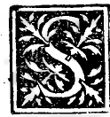
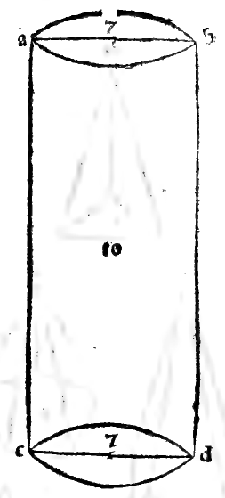
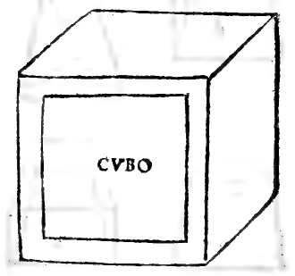

CHAPTER LXIV¶
On Pyramids and All Their Differences, and First on the Round Pyramid (Cone, Plates XLIII–XLIV).

It now follows in order, most lofty Duke, to treat of pyramids and their varieties—first those called round pyramids (pyramidi rotonde, cones, Plates XLIII–XLIV), and then all the lateral pyramids (pyramidi laterate).
Definition and Three Species of the Round Pyramid (Cone, [XI.Def.18])
With our philosopher in the eleventh book, we define the round pyramid (cone) as a solid figure traced out by the revolution of a right-angled triangle when one of its two sides containing the right angle remains fixed as the axis and the triangle is turned completely around until it returns to the place from which it began to move. Its fixed side is the axis (l’axe), its base swept out by the other leg is a circle, and it is called the pyramid of the round column (having the same base and altitude). Moreover, according to the ratio of the fixed leg to the revolving leg, there are three species of round pyramids ([XI.Def.18]):
Right-Angled (*Rectangola*): When the fixed leg \(ab\) is equal to the revolving leg \(bc\) (\(ab = bc\)).
Acute-Angled (*Acutiangola*): When the fixed leg \(ab\) is longer than the revolving leg \(bc\) (\(ab > bc\)).
Obtuse-Angled (*Obtusiangola*): When the fixed leg \(ab\) is shorter than the revolving leg \(bc\) (\(ab < bc\)).
Proof of the Three Species at the Apex Angle ([I.5], [I.19], [I.32])
Let \(abc\) be the generating right triangle with right angle at \(b\) (\(\angle abc = 90^{\circ}\)), fixed vertical axis \(ab\), and revolving base leg \(bc\). When the revolving triangle reaches the opposite position \(abd\) in the same plane, the two legs \(bc\) and \(bd\) form a single straight line \(bcd\) (the diameter of the circular base), and the axial cross-section of the cone is the isosceles triangle \(acd\) with apex angle \(\angle cad = 2\,\angle cab\):
Case 1 (:math:`ab = bc`, Right-Angled Cone): In the right triangle \(abc\), since \(ab = bc\), by the fifth and thirty-second of the first, the acute angle \(\angle cab\) is half a right angle (\(45^{\circ}\)). Therefore the full apex angle \(\angle cad = 2\,\angle cab\) is one right angle (\(90^{\circ}\)), and the cone is called right-angled (pyramide rectangola).
Case 2 (:math:`ab > bc`, Acute-Angled Cone): If the axis \(ab\) is longer than the radius \(bc\), then by the nineteenth and thirty-second of the first (since the greater side subtends the greater angle), \(\angle cab < \angle acb\), so \(\angle cab\) is less than half a right angle (\(< 45^{\circ}\)). Therefore the full apex angle \(\angle cad = 2\,\angle cab\) is less than a right angle (acute), and the cone is called acute-angled (pyramide acutiangola).
Case 3 (:math:`ab < bc`, Obtuse-Angled Cone): If the axis \(ab\) is shorter than the radius \(bc\), then by [I.19] and [I.32], \(\angle cab > \angle acb\), so \(\angle cab\) is greater than half a right angle (\(> 45^{\circ}\)). Therefore the full apex angle \(\angle cad = 2\,\angle cab\) is greater than a right angle (obtuse), and the cone is called obtuse-angled (pyramide obtusiangola).
Marginal Woodcut Diagrams (Paganini 1509)¶

Folio 0055 Diagram 1¶

Folio 0055 Diagram 2¶